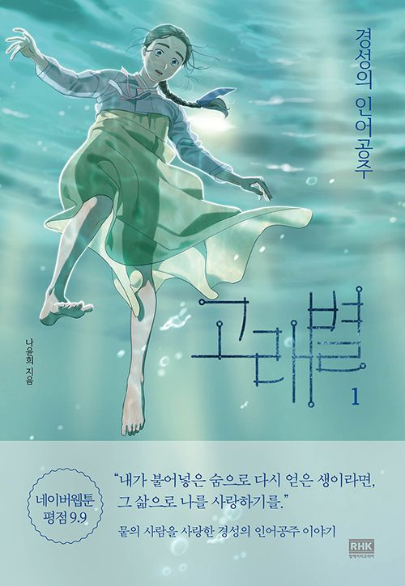

| Whale Star: The Gyeongseong Mermaid |
|
|---|---|
| Genre | Drama, Romance, Historical |
| Writer | Yunhee Na |
| Serial Number | Naver Webtoon |
| Naver Series | |
| Serialization Period | 2019. 06. 21. ~ 2021. 07. 08. |
| Serialization Cycle | Friday |
| Number of Books | Volume 6 (2021. 01. 15. completed) |
| Usage Level | 12 Years Old |
1. Overview
Korean virtual historical fantasy/romance webtoon. The author is Na Yoon-hee.
It is a romance piece set during the Japanese colonial era and is based on Andersen's fairy tale The Little Mermaid.
2. Plot
Joseon under Japanese colonial rule in 1926. Sua, a 17-year-old girl, works as a maid in the house of a pro-Japanese landowner in Gunsan, North Jeolla Province.
One day, Su-a finds independence activist Ui-hyeon lying on the beach with an injury and protects him...
3. Serial Status
It has been serialized on Naver Webtoon every Friday since June 21, 2019.
It was completed with a total of 105 episodes on July 8, 2021.
As of September 14, 2021, it has been converted to a paid service.
4. Characteristics
At the end of each chapter, a high-quality illustration of the mermaid princess is featured, pointing out the point of contact between the fairy tale mermaid princess and the main story.
As one of the characteristics of the drawing style, there are many cuts drawn with the screen tilted. Not only the cuts with the main characters Sua and Eui-hyeon, but also the cuts with supporting and villain roles are especially drawn. Considering that such scenes are rarely seen in Na Yun-hee's previous works, the reason why there are so many such scenes in Whale Byeol may be that she wanted to reflect the unstable phase of the times.
There are no outstanding villains among the main characters. Instead, there are many controversial figures. Right away, Yeo Yun-hwa also received many curses until Su-ah became mute, and Song Hae-soo and Han Yeon-kyung were constantly criticized. During the Great Kanto Earthquake, she once spoke badly of Koreans, but that was when she was ignorant, and her father (of course, a Japanese) corrected her words right away. However, on her way to visit Ui-hyeon after the whale star disintegrated, she once said something that seemed to look down on the Joseon people.
The group that appears in the work under the name of 'death group' seems to have been the motif of the Heroic Corps. There are many similarities in the organizational system and the way they work.
It has many similarities with the Daum webtoon Kim Ramu's Gyeongseong Nocturne. Set in 1926 and 1928, respectively, during the Japanese colonial period, the main characters are a conscious daughter from a pro-Japanese family and an ignorant daughter from a poor family.
When Haesu tried to kill her sua and she chose her own death, the procurement she used was caustic soda, or lye. If you eat it with a strong alkaline solution, you will literally lose your life. In fact, some people have committed suicide by drinking lye. Although it is poisonous, lye was not difficult to obtain because it was a product that was widely used instead of laundry detergent at the time. On June 1, 1926, an article about a person who committed suicide by drinking lye appears in the Dong-A Ilbo. According to the testimonies of those who actually witnessed it, if you commit suicide by eating lye, you will not die right away, but you will die after suffering for a long time. This is because it does not paralyze blood vessels, but damages body tissues, that is, causes harm by melting internal organs.Potassium cyanide (potassium cyanide), which appears in the mass media, is harmful to the human body by blocking oxygen from being supplied to the blood, so it causes death much faster. Since it is a highly toxic substance, it is difficult for ordinary people to obtain it easily.
There are actually people who did not die even after drinking lye like Scar Soo-ah in the story. For example, Kang Hyang-ran, who is known as the first short-haired gisaeng in Joseon, is said to have lived without dying even though she ate lye in two suicide attempts.
Regarding the actions of Song Hae-soo and Han Yeon-kyung, readers criticize the two for not properly apologizing to Su-a, and on the contrary, they opine that they chose to die without apologizing in order to die with dignity because they do not regret their actions of trying to kill Su-a. There is also Han Yeon-gyeong later kneels down and apologizes to Su-ah, saying that he can dispose of himself as he pleases when everything is over, but he says that if he went back to that day, he would have made the same choice.
In Song Hae-soo's past flashback, a person named 'Pechka' appears, and it is Choi Jae-hyung, an independent activist who actually existed. In fact, Choi Jae-hyung served as a spiritual support for Koreans in Maritime Province and helped the independence movement of Joseon. It seems that the writer thoroughly investigated the historical materials of the independence movement abroad.
If the storyline in the beginning is related to the fairy tale The Little Mermaid, it seems clear that Sua = The Little Mermaid and Uihyeon = Prince. However, as the story progressed, there was an opinion that the main characters, Sua, Euihyeon, and Haesu, all resembled the little mermaid little by little. Perhaps the Little Mermaid and the Prince metaphorically express Joseon's relationship with all those who sacrifice themselves for independence in a broad sense.
As the era is the era and the motive was taken from the sad ending The Little Mermaid, almost all the main characters are flagged for death. In particular, it is no exaggeration to say that members of the Order are walking death flags.
5. Characters
For more information, Please note and see Whale Star/Characters Cast.
6. Evaluation
The theme of Gyeongseong's Little Mermaid, drawing style, and drawing are receiving favorable reviews.
6.1 Reputation
Most of the favorable reviews are for the attractive characters, excellent drawing and directing, which are much more advanced than before, and the impressive and touching lines and sad story that goes well with them. In particular, it is not an exaggeration to say that Na Yoon-hee's drawing and writing skills, which have been well-received since her previous works, peaked in this work. All of Na Yoon-hee's works boasted considerable quality, but even compared to her previous works, there is a lot of evidence that gave strength to this work. The artist's unique Korean-style drawing style stands out. The periodical research is also thorough. In particular, in Hae-su's recollection of the past, there are traces of meticulous research on historical materials related to the independence movement abroad in Maritime Province.
The Southwestern dialect expression is surprisingly accurate. There are even words that are rarely used now, unless you are an old person from the area or you don't know anything at all. For example, if you read Sua's lines in the first half, such as "Spoorly" and "Derukdelukheoda", you can see that even each and every dialect is written in the Jeolla-do dialect. Sua, who had the most lines in the play, spoke the Jeolla-do dialect the most, but after the middle part, the dialect only comes out through Sua's monologue because the writer made her mute. And the geographical background is also changed to Gyeongseong (Seoul), so you can't see much of the dialect. At most, only Han In-seong, the younger brother of Han Yeon-kyung, speaks dialect. After Sua also lived in Gyeongseong and learned to write, her dialect gradually diminished in her thoughts and writings. However, the background during the work is Gunsan, the northernmost point in Jeonbuk, and the dialect used by characters such as Sua has a strong feel of a southern dialect.
The lines and monologues of the characters are very poetic. In harmony with the emotional paintings, it feels like watching a poem. The author's previous work, Like Magic at This Moment, was close to modern daily life, so there wasn't much of a sensibility that stood out. Thanks to the serialization in Lezhin Comics, it was not well known, but the author's debut work, which was published in 2014, was blinded by the background of World War I. Na Yoon-hee's unique and beautiful style, which was shown in the garden, came to this work and burst into full potential.
Like other webtoon writers, the background is retouched, such as color correction, modeling, and additional pen touches, despite using sketchup, so it doesn't look like sketchup.
6.2 Critism
However, there are reviews that the story is a bit confusing. It is not clear what the writer wants to show, and it is evaluated that it is particularly regrettable that the characters in the work are forced to die for the sake of directing. In addition, each scene is mixed with clichés from famous dramas, and there is a reputation that it is a directing that has been seen a lot. The story feels forced to fit into the story of The Little Mermaid, so the development is somewhat forced.
What is especially regrettable is that the character of the male lead, Eui-hyeon, is very ambiguous. As the motif was taken from the story of the Little Mermaid in the first place, it is a work aimed at the growth narrative of the heroine, Sua. that it was expressed. The character who reveals this part most clearly is Ui-hyeon. At the beginning of her story, her pure heart for Joseon is shown in the scene where her Eui-hyeon expresses her feelings to Su-ana and her Hae-su. However, this kind of emotion in the early part of Ui-hyeon did not lead to an active independence movement in the middle and latter half, so it became very unclear what the character was trying to express. Even when most of the members of the whale star died because of Ui-hyeon's father, Ui-hyeon, who felt guilty about this, throws a bomb at the end, kills his pro-Japanese father, and decides to die himself, following the story of The Little Mermaid, so Su-a throws it and sacrifices himself. As a result, the scene in which Ui-hyeon was directly involved in the independence movement disappeared.
In addition, Hae-soo, the sub-male protagonist, is the opposite of Ui-hyeon, and as more of her narratives are added toward the latter half, she gradually transforms into a three-dimensional character, making the contrast even more extreme. At the last minute, a phenomenon even occurred in which the sea water wave far surpassed the uihyeon wave in the comment window. It was necessary to leave a strong impression of the main male lead between Soo-ah, the heroine who openly claimed to be a sacrificial mermaid, and Hae-soo, a sub-character that is one of the most three-dimensional among the protagonists. It ended without being able to play an active role as an independence activist or a male lead until the end. Because of this, there are readers who express regret that it would have been better if the original story of The Little Mermaid had been properly transformed rather than followed.
Although historical evidence of the period is faithful, there are many traces of jade in props and background historical evidence. A cruise ship used in the 21st century has only a chimney attached to it, and it is made into a passenger ship in the 1920s. There is also a depiction of handling a pistol with a two-handed grip method that did not exist at that time. Looking at the fact that the author specified that the etymology of 'Mouser' is the wrong pronunciation of 'Mauser', it seems that the research itself was meticulous, but it seems that it was difficult to maintain details due to the circumstances. However, given that the basic labor intensity of webtoon writers is on the high side, it is difficult to research data and maintain the historical details that match it. In addition, it is necessary to consider a little considering the excellent drawing and historical research of the era with almost no plot.
7. Paperback
Volume 1
August 12, 2020
For reference, it is said that all the cover art of the book is connected to one.
Who is your Favorite Characters?
Compilation of analects
© 2022 Namu Wiki. All Rights Reserved.